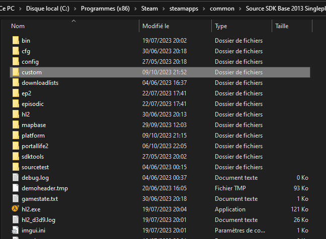

Les Répertoires et création d'un projet
https://developer.valvesoftware.com/wiki/Source_SDK_Files_and_Directory_Structure
Ce chapitre à pour but de vous expliquer comment marche le système de fichier d'un jeu qui marche avec le Source. Pour placer correctement vos différentes ressources, il faut crée un fichier GameInfo.txt pour indiquer de quel type de jeu qu'il s'agit.
Répertoire Racine
Les jeux source on ce système de répertoire
Le Dossier Bin, possède les outils et les bibliothèques du moteur, aller ici pour trouver Hammer.
Le dossier avec les données (hl2 pour Half-Life 2, left4dead2 pour Left4 Dead 2, etc.)
Vous pouvez trouver les fichiers de votre jeu sur les paramètres devotre jeu Steam, cliquer sur l'engrenage puis sur fichiers locaux.
-Des dossiers de données supplémentaire lier au langues ou DLC (ce n'est pas très important pour le moment)

Création de projet et répertoires des données
(Si ces dossiers n'apparaissent pas, c'est normal, ils sont pour la plupart compressé en .vpk)
Dans les fichiers du jeu dont nous voulons en faire un mod crée un dossier avec le nom du mod dans notre exemple, nous allons l'appeler "custom"

Dans ce dossier, nous allons créer plusieurs dossiers voici leurs utilités
bin: server.dll et client.dll contient le code compilé du mod
cfg: Contient des lignes de commande pour la console format .cfg
expressions: expresion des npcs pour les scenes de dialogue .txt
maps: pour mettre les cartes en format .bps
mapsrc: cartes au format .vmt pour qu'on puisse les ouvrirs avec hammer.
materials: pour mettre les textures des modèles importés .vmt et .vtf
materialsrc: Texture non comprésé et non exporté dans le format valve
media: vidéo au format .bik
models: pour mettre les modèles importés .mdl
modelsrc: fichier .smd et .qc du model (vous pouvez mettre en plus le fichier blender)
mapsrc/prefabs: pour y mettre les préfabriquer des maps
particles: mettre vos particules crée .pcf
ressources: ressource divers du jeu (police, icone, menu, etc...)
save: sauvegarde du jeu .sav
scenes: scene de dialogue des npcs format .vcd
scripts: pour mettre les scripts .txt
src: mettre ici le code c++ fichier .cpp et .h
Les dossiers rc (modelsrc, src, etc...) sont uniquement destinée aux développeurs.

GameInfo
Dans le dossier de votre mod, vous devez avoir un gameinfo.txt qui contient les informations primaires de votre mod (Titre, SearchPath, etc...).
Le fichier gameinfo.txt décrit votre mod. Il contient des métadonnées comme le nom du mod, un lien vers votre site web et un manuel, et définit comment on peut y accéder. Ce fichier est stocké dans le dossier principal de votre mod, et il fait office de marqueur pour Steam, Source et le Source SDK pour détecter son existence.
Lancer le mod
Fait la commande -game «yourModName» (dans notre cas custom)